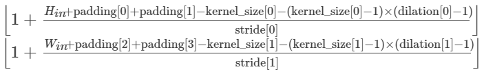
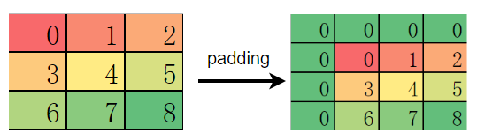
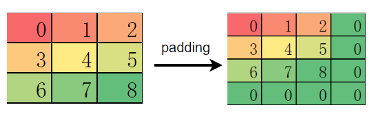

典型算子或接口区别介绍

接口类
torch.device
PyTorch 在构建模型时，通常会利用 torch.device 指定模型和数据绑定的设备，是在 CPU 还是 GPU 上，如果支持多 GPU，还可以指定具体的 GPU 序号。绑定相应的设备后，需要将模型和数据部署到对应设备，代码如下：
# bind to the GPU 0 if GPU is available, otherwise bind to CPU
device = torch.device("cuda:0" if torch.cuda.is_available() else "cpu") # 单 GPU 或者 CPU
# deploy model to specified hardware
model.to(device)
# deploy data to specified hardware
data.to(device)
# distribute training on multiple GPUs
if torch.cuda.device_count() > 1:
model = nn.DataParallel(model, device_ids=[0,1,2])
model.to(device)
# set available device
os.environ['CUDA_VISIBLE_DEVICE']='1'
model.cuda()
而在 MindSpore 中，我们通过 context 中 的 device_target 参数 指定模型绑定的设备，device_id 指定设备的序号。与 PyTorch 不同的是，一旦设备设置成功，输入数据和模型会默认拷贝到指定的设备中执行，不需要也无法再改变数据和模型所运行的设备类型。代码如下：
from mindspore import context
context.set_context(device_target='Ascend', device_id=0)
# define net
Model = ..
# define dataset
dataset = ..
# training, automatically deploy to Ascend according to device_target
Model.train(1, dataset)
此外，网络运行后返回的 Tensor 默认均拷贝到 CPU 设备，可以直接对该 Tensor 进行访问和修改，包括转成 numpy 格式，无需像 PyTorch 一样需要要先执行 tensor.cpu 再转换成 numpy 格式。
nn.Module
使用 PyTorch 构建网络结构时，我们会用到 nn.Module 类，通常将网络中的元素定义在 __init__ 函数中并对其初始化，将网络的图结构表达定义在 forward 函数中，通过调用这些类的对象完成整个模型的构建和训练。nn.Module 不仅为我们提供了构建图接口，它还为我们提供了一些常用的 API ，来帮助我们执行更复杂逻辑。
MindSpore 中的 nn.Cell 类发挥着和 PyTorch 中 nn.Module 相同的作用，都是用来构建图结构的模块，MindSpore 也同样提供了丰富的 API 供开发者使用，虽然名字不能一一对应，但 nn.Module 中常用的功能都可以在 nn.Cell 中找到映射。
以几个常用方法为例：
常用方法 |
nn.Module |
nn.Cell |
|---|---|---|
获取子元素 |
named_children |
cells_and_names |
添加子元素 |
add_module |
insert_child_to_cell |
获取元素的参数 |
parameters |
get_parameters |
数据对象
在 PyTorch 中，可以存储数据的对象总共有四种，分别时 Tensor、Variable、Parameter、Buffer。这四种对象的默认行为均不相同，当我们不需要求梯度时，通常使用 Tensor 和 Buffer 两类数据对象，当我们需要求梯度时，通常使用 Variable 和 Parameter 两类对象。PyTorch 在设计这四种数据对象时，功能上存在冗余（Variable 后续会被废弃也说明了这一点）。
MindSpore 优化了数据对象的设计逻辑，仅保留了两种数据对象：Tensor 和 Parameter，其中 Tensor 对象仅参与运算，并不需要对其进行梯度求导和参数更新，而 Parameter 数据对象和 PyTorch 的 Parameter 意义相同，会根据其属性 requires_grad 来决定是否对其进行梯度求导和 参数更新。 在网络迁移时，只要是在 PyTorch 中未进行参数更新的数据对象，均可在 MindSpore 中声明为 Tensor。
梯度求导
梯度求导涉及的算子和接口差异主要是由 MindSpore 和 PyTorch 自动微分原理不同引起的。
torch.no_grad
在 PyTorch 中，默认情况下，执行正向计算时会记录反向传播所需的信息，在推理阶段或无需反向传播网络中，这一操作是冗余的，会额外耗时，因此，PyTorch 提供了 torch.no_grad 来取消该过程。
而 MindSpore 只有在调用 GradOperation 才会根据正向图结构来构建反向图，正向执行时不会记录任何信息，所以 MindSpore 并不需要该接口，也可以理解为 MindSpore 的正向计算均在 torch.no_grad 情况下进行的。
retain_graph
由于 PyTorch 是基于函数式的自动微分，所以默认每次执行完反向传播后都会自动清除记录的信息，从而进行下一次迭代。这就会导致当我们想再次利用这些反向图和梯度信息时，由于已被删除而获取失败。因此，PyTorch 提供了 backward(retain_graph=True) 来主动保留这些信息。
而 MindSpore 则不需要这个功能，MindSpore 是基于计算图的自动微分，反向图信息在调用 GradOperation 后便永久的记录在计算图中，只要再次调用计算图就可以获取梯度信息。
高阶导数
基于计算图的自动微分还有一个好处，我们可以很方便的实现高阶求导。第一次对正向图执行 GradOperation 操作后，我们可以得到一阶导，此时计算图被更新为正向图+一阶导的反向图结构，但我们再次对更新后的计算图执行 GradOperation 后，我们就可以得到二阶导，以此类推，通过基于计算图的自动微分，我们很容易求得一个网络的高阶导数。
算子类
MindSpore 的大部分算子 API 和 TensorFlow 相近，但也有一部分算子的默认行为与 PyTorch 或 TensorFlow 存在差异。开发者在做网络脚本迁移时，如果未注意到这些差异，直接使用默认行为，很容易出现与原迁移网络不一致的情况，影响网络训练，我们建议开发者在迁移网络时不仅对齐使用的算子，也要对齐算子的属性。这里我们总结了几个常见的差异算子。
参数意义不同
nn.Dropout
Dropout 常用于防止训练过拟合，有一个重要的 概率值 参数，该参数在 MindSpore 中的意义与 PyTorch 和 TensorFlow 中的意义完全相反。
在 MindSpore 中，概率值对应 Dropout 算子的属性 keep_prob，是指输入被保留的概率，1-keep_prob是指输入被置 0 的概率。
在 PyTorch 和 TensorFlow 中，概率值分别对应 Dropout 算子的属性 p和 rate，是指输入被置 0 的概率，与 MindSpore.nn.Dropout 中的 keep_prob 意义相反。
更多信息请参考链接： MindSpore Dropout 、 PyTorch Dropout 、 TensorFlow Dropout
nn.BatchNorm2d
BatchNorm 是 CV 领域比较特殊的正则化方法，它在训练和推理的过程中有着不同计算流程，通常由算子属性控制。MindSpore 和 PyTorch 的 BatchNorm 在这一点上使用了两种不同的参数组。
差异一
torch.nn.BatchNorm2d在不同参数下的状态training
track_running_stats
状态
True
True
期望中训练的状态，running_mean 和 running_var 会跟踪整个训练过程中 batch 的统计特性，而每组输入数据用当前 batch 的 mean 和 var 统计特性做归一化，然后再更新 running_mean 和 running_var。
True
False
每组输入数据会根据当前 batch 的统计特性做归一化，但不会有 running_mean 和 running_var 参数了。
False
Ture
期望中推理的状态，BN 使用 running_mean 和 running_var 做归一化，并且不会对其进行更新。
False
False
效果同第二点，只不过处于推理状态，不会学习 weight 和 bias 两个参数。一般不采用该状态。
mindspore.nn.BatchNorm2d在不同参数下的状态use_batch_statistics
状态
True
期望中训练的状态，moving_mean 和 moving_var 会跟踪整个训练过程中 batch 的统计特性，而每组输入数据用当前 batch 的 mean 和 var 统计特性做归一化，然后再更新 moving_mean 和 moving_var。
Fasle
期望中推理的状态，BN 使用 moving_mean 和 moving_var 做归一化，并且不会对其进行更新。
None
自动设置 use_batch_statistics。如果是训练，use_batch_statistics=True，如果是推理，use_batch_statistics=False。
通过比较可以发现，
mindspore.nn.BatchNorm2d相比torch.nn.BatchNorm2d，少了两种冗余的状态，仅保留了最常用的训练和推理两种状态。差异二
BatchNorm系列算子 的 momentum 参数在 MindSpore 和 PyTorch 表示的意义相反，关系为：
\(momentum_{pytorch} = 1 - momentum_{mindspore}\)
算子行为不同
ops.Transpose
在做轴变换时，PyTorch 常用到两种算子 - Tensor.permute 和 torch.transpose，而 MindSpore 和 TensorFlow 仅提供了 transpose 算子。需要注意的是，Tensor.permute 包含了 torch.transpose 的功能，torch.transpose 仅支持同时交换两个轴，而 Tensor.permute 可以同时变换多个轴。
# pytorch 代码
import numpy as np
import torch
from torch import Tensor
data = np.empty((1, 2, 3, 4)).astype(np.float32)
ret1 = torch.transpose(Tensor(data), dim0=0, dim1=3)
ret1.shape # (4, 2, 3, 1)
ret2 = Tensor(data).permute((3, 2, 1, 0))
ret2.shape # (4, 3, 2, 1)
MindSpore 和 TensorFlow 的 transpose算子功能相同， 虽然名字叫 transpose，但实际可以做多个轴的同时变换，等价于 Tensor.permute。因此，MindSpore 也不再单独提供类似 torch.tranpose 的算子。
# mindspore 代码
import mindspore as ms
import numpy as np
from mindspore import Tensor, ops
ms.context.set_context(device_target="Ascend")
data = np.empty((1, 2, 3, 4)).astype(np.float32)
ret = ops.Transpose()(Tensor(data), (3, 2, 1, 0))
ret.shape # (4, 3, 2, 1)
更多信息请参考链接：MindSpore Transpose 、 PyTorch Transpose 、PyTorch Permute 、 TensforFlow Transpose
Conv 和 Pooling
对于类似卷积和池化的算子，我们知道算子的输出特征图大小依赖输入特征图、步长、kernel_size 和 padding 等变量。
如果 pad_mode 设置为 valid，则输出特征图高和宽的计算公式分别为：

如果 pad_mode（对应 PyTorch 中的属性为 padding，与属性 pad_mode 含义并不相同） 设置为 same 时，有时需要对输入特征图进行自动的 padding 操作，当padding 的元素为偶数时，padding 的元素会均匀分布在特征图的上下左右，此时 MindSpore、PyTorch 和 TensorFlow 中该类算子行为一致。
但当 padding 的元素为奇数时，PyTorch 会优先填充在输入特征图的左侧和上侧：

而 MindSpore 和 TensorFlow 则优先填充在特征图的右侧和下侧：

举例说明：
# mindspore example
import numpy as np
import mindspore as ms
from mindspore import Tensor, ops
ms.context.set_context(device_target="Ascend")
data = np.arange(9).reshape(1,1,3,3).astype(np.float32)
# data
# [[[[0. 1. 2.]
# [3. 4. 5.]
# [6. 7. 8.]]]]
op = ops.MaxPool(kernel_size=2, strides=2, pad_mode='same')
op(Tensor(data))
# [[[[4. 5.]
# [7. 8.]]]]
在做 MindSpore 模型迁移时，如果模型加载了 PyTorch 的预训练模型，而之后又在 MindSpore 进行 finetune，则该差异可能会导致精度下降，对于 padding 策略为 same 的卷积，开发者需要特别注意。
如果想和 PyTorch 行为保持一致，可以先使用 ops.Pad 算子手动 pad 元素，然后使用 pad_mode="valid" 的卷积和池化操作。
import numpy as np
import mindspore as ms
from mindspore import Tensor, ops
ms.context.set_context(device_target="Ascend")
data = np.arange(9).reshape(1, 1, 3, 3).astype(np.float32)
# only padding on top left of feature map
pad = ops.Pad(((0, 0), (0, 0), (1, 0), (1, 0)))
data = pad(Tensor(data))
ops.MaxPool(kernel_size=2, strides=2, pad_mode='same')(data)
# [[[[0. 2.]
# [6. 8.]]]]
默认权重初始化不同
我们知道权重初始化对网络的训练十分重要，通过我们会选择一个适合的分布来初始化权重。但还有一个部分算子会隐式的声明权重，在不同的框架中，即使这些算子功能一致，但如果隐式声明的权重初始化方式分布不同，也会对训练过程产生影响，甚至无法收敛。
常见隐式声明权重的算子：Conv、Dense(Linear)、Embedding、LSTM 等，其中区别较大的是 Conv 类和 Dense 两种算子。
Conv2d
mindspore.nn.Conv2d的weight为：\(\mathcal{N}(0, 1)\)，bias为：zeros。
torch.nn.Conv2d的weight为：\(\mathcal{U} (-\sqrt{k},\sqrt{k} )\)，bias为：\(\mathcal{U} (-\sqrt{k},\sqrt{k} )\)。
tf.keras.Layers.Conv2D的weight为：glorot_uniform，bias为：zeros。
其中，\(k=\frac{groups}{c_{in}*\prod_{i}^{}{kernel\_size[i]}}\)
Dense(Linear)
mindspore.nn.Linear的weight为：\(\mathcal{N}(0, 1)\)，bias为：zeros。
torch.nn.Dense的weight为：\(\mathcal{U}(-\sqrt{k},\sqrt{k})\)，bias为：\(\mathcal{U}(-\sqrt{k},\sqrt{k} )\)。
tf.keras.Layers.Dense的weight为：glorot_uniform，bias为：zeros。
其中，\(k=\frac{groups}{in\_features}\)
对于没有正则化的网络，如没有 BatchNorm 算子的 GAN 网络，梯度很容易爆炸或者消失，权重初始化就显得十分重要，各位开发者应注意权重初始化带来的影响。